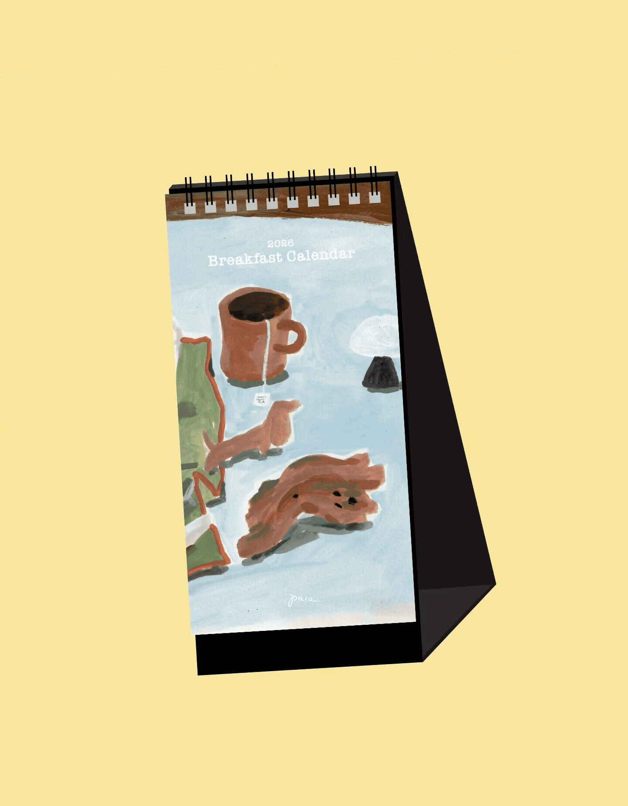
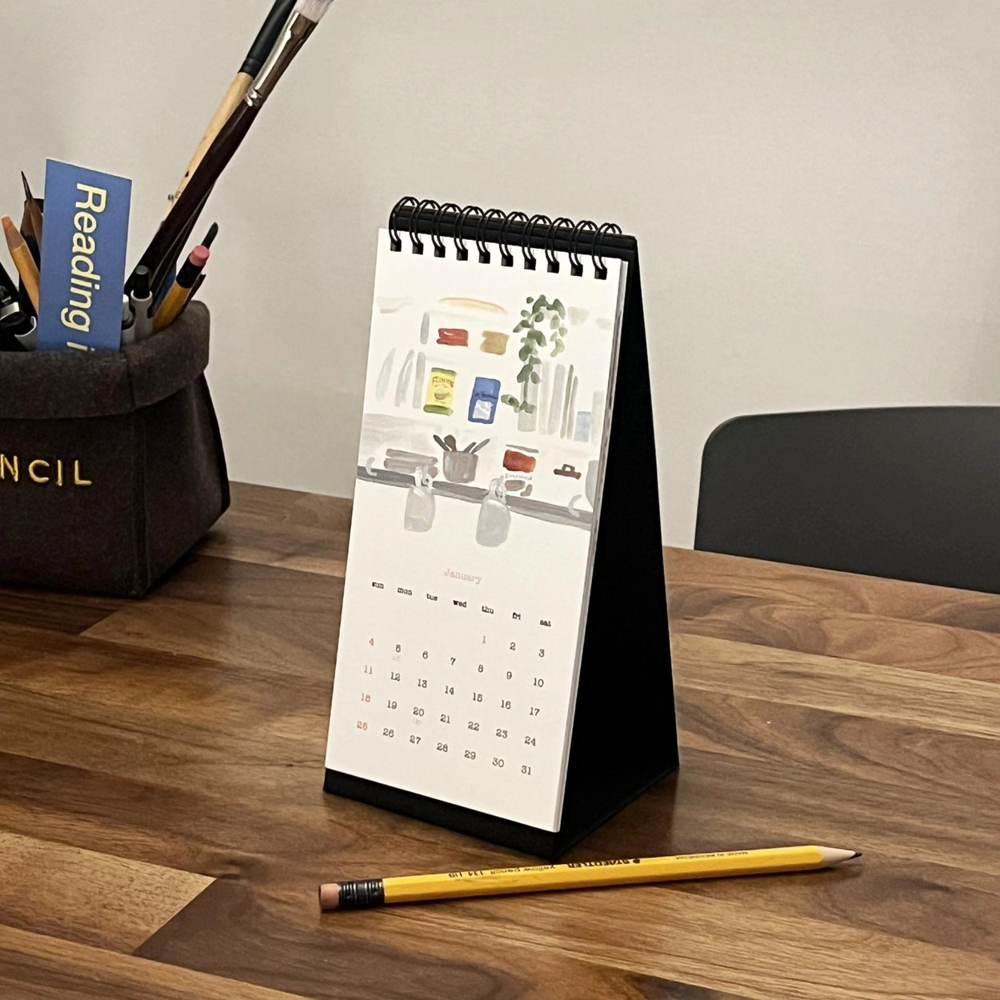
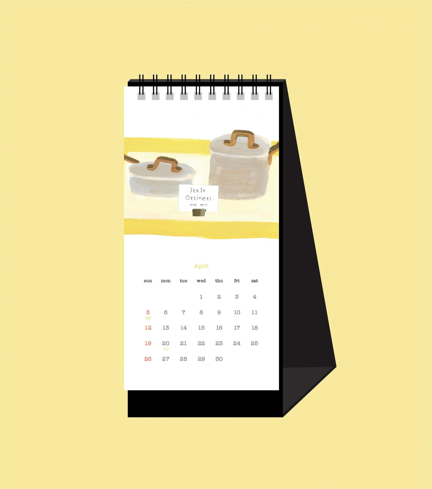
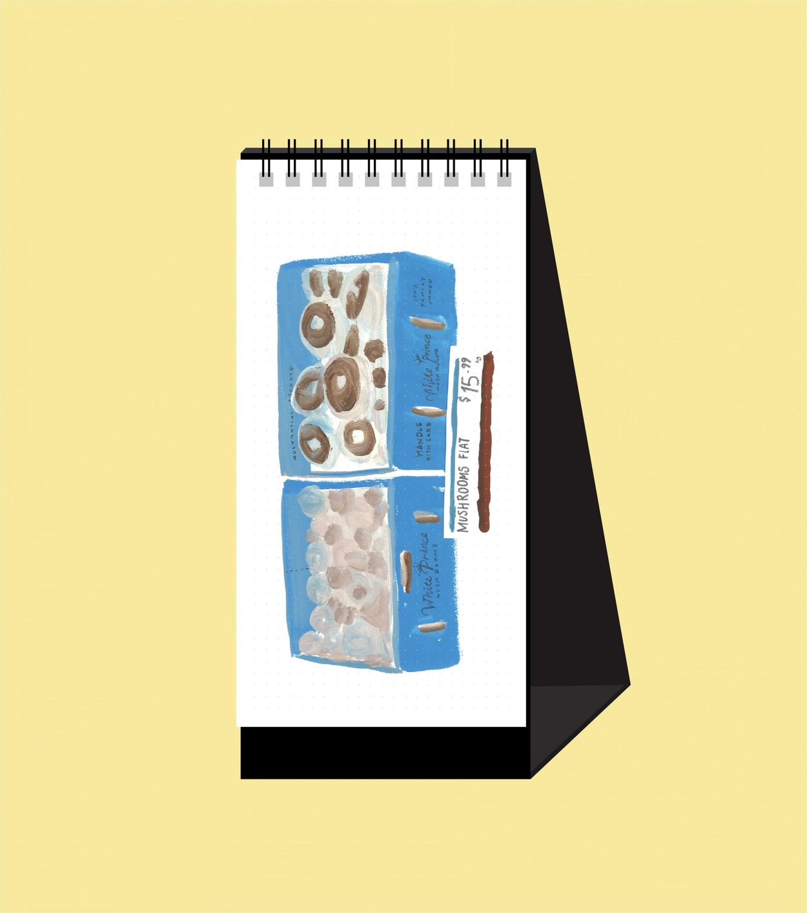
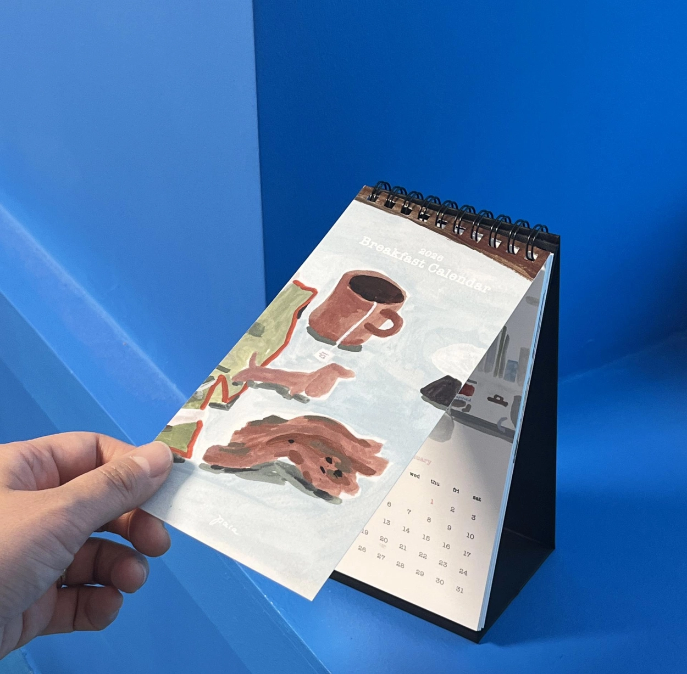
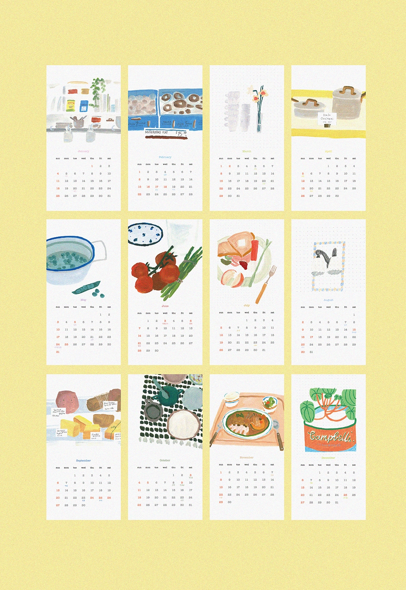
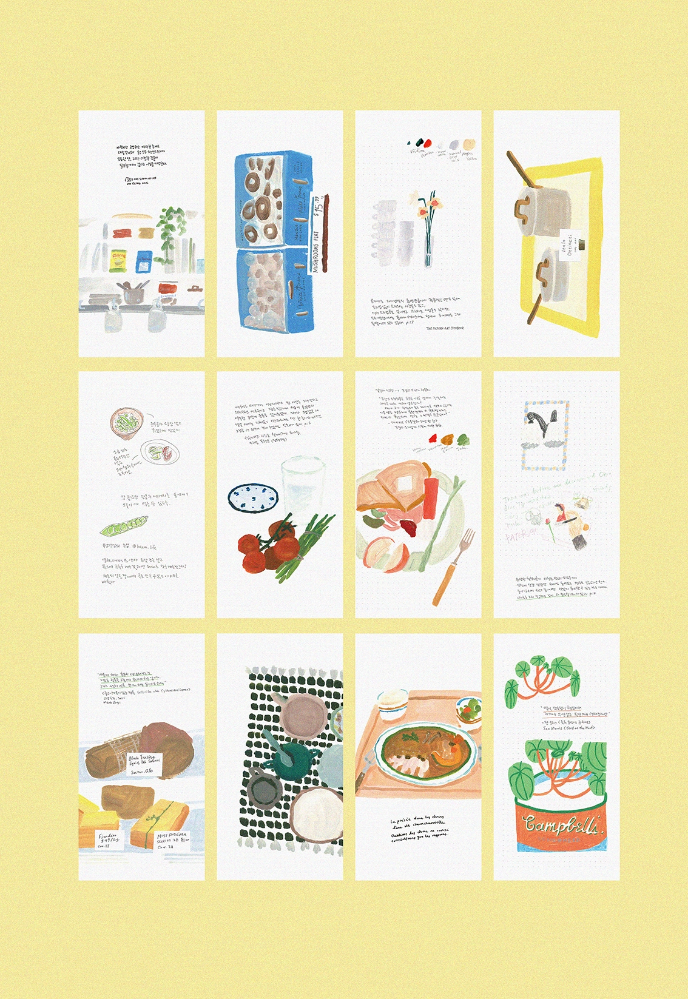
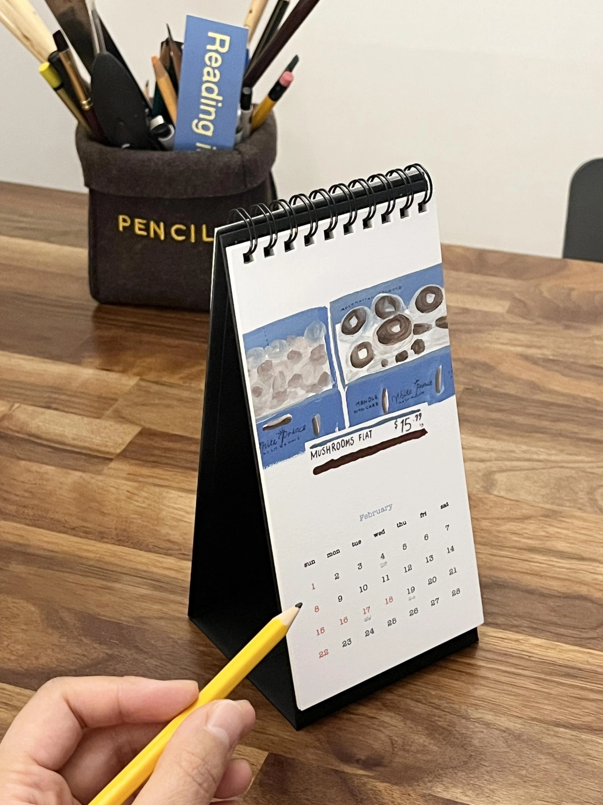
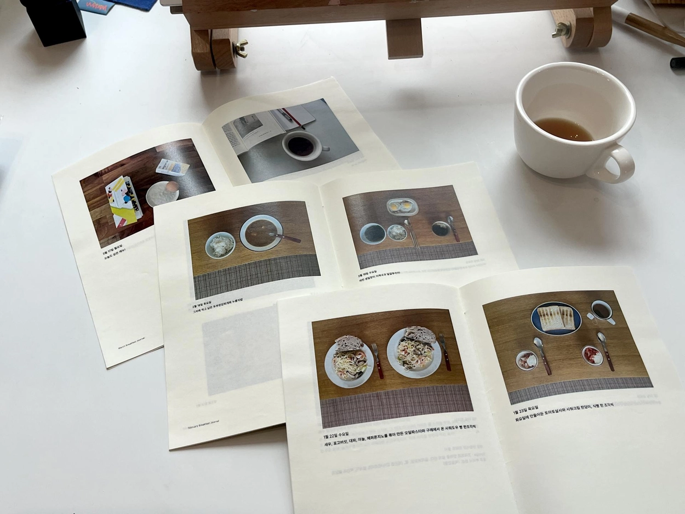
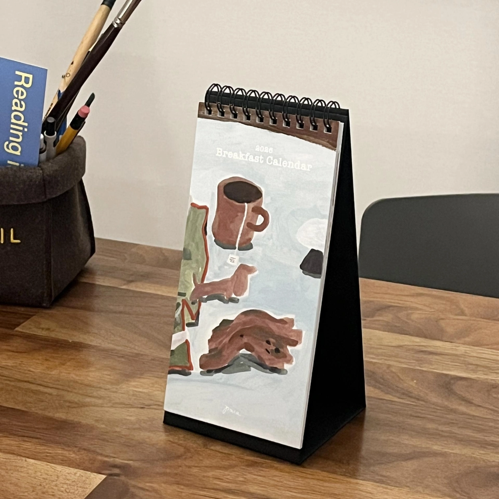

"유명한 철학자들이 아침을 먹으러 모였을 때 식탁에 달랑 달걀만 하나씩 놓여있는 경우도 많았다고 한다. 굳이 넘치게 차려 놓아야만 맛있게 음미할 수 있는 것은 아니다. 때로는 그저 모인다는 것이 더 중요할 때가 있다."
— 《모던아트쿡북》, 메리 앤 코즈, 2015
아침식사를 떠올리면 집 안에서 직접 요리하는 장면이 생각납니다. 거창한 메뉴는 아니더라도 달걀 하나만 먹더라도 스스로를 잘 챙기는 마음으로 하루를 시작하고 싶어서 매일 아침식사를 기록하기 시작했고, 기분 좋은 아침식사에 영감을 주는 그림을 그려 작은 탁상 달력을 만들었습니다.
앞 장에는 과슈, 색연필, 마카, 연필을 사용하여 아침식사를 주제로 그렸던 그림들을 모았습니다. 24절기 표시와 공휴일(대체공휴일 포함)을 표시하였고요. 뒷면에는 앞장에 그린 아트웍을 크게 배치하거나 틈틈이 수집한 '요리와 음식에 영감을 주는 문장들'을 적었습니다.
"When famous philosophers gathered for breakfast, it was often said that only a single egg sat on the table for each of them. A meal doesn't need to overflow to be savored. Sometimes, simply being together is what matters most."
— The Modern Art Cookbook, Mary Ann Caws, 2015
When I think of breakfast, I picture cooking at home. Nothing elaborate — even just a single egg, eaten with the quiet intention of taking good care of myself. That feeling is what led me to start recording my mornings, and eventually to make this small desk calendar filled with drawings to inspire a good breakfast.
The front of each page brings together illustrations made with gouache, colored pencil, marker, and pencil — all on the theme of breakfast. The 24 solar terms and public holidays (including substitute holidays) are marked throughout. On the back, the front artwork is enlarged, alongside a collection of sentences about cooking and food that I've gathered over time.